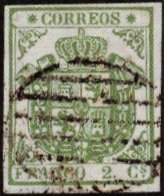
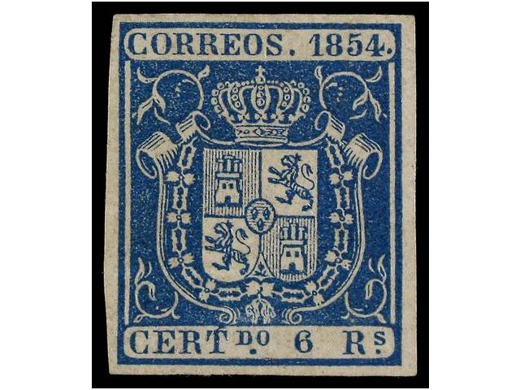
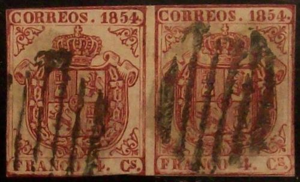
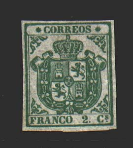
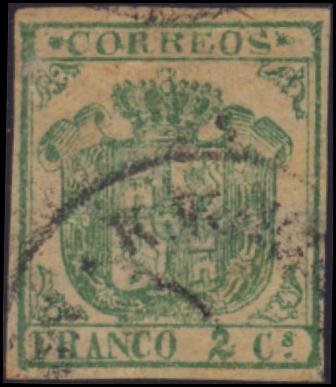
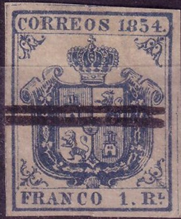
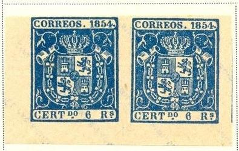

Return To Catalogue - Spain overview
Note: on my website many of the
pictures can not be seen! They are of course present in the
catalogue;
contact me if you want to purchase it.






Certified genuine stamps
2 Cs green (inscription "CORREOS") 4 Cs red 6 Cs red 1 Rl blue 2 Rs orange 5 Rs green 6 Rs blue
Value of the stamps |
|||
vc = very common c = common * = not so common ** = uncommon |
*** = very uncommon R = rare RR = very rare RRR = extremely rare |
||
| Value | Unused | Used | Remarks |
| 2 c | RRR | RR | Also exists on bluish paper |
| 4 c | RR | * | Also exists on bluish paper |
| 6 c | R | * | |
| 1 Rl | RRR | RR | Also exists on bluish paper With remainder cancel (bars): *** |
| 2 Rs | RR | RR | Also exists on thick bluish paper: RRR |
| 5 Rs | RR | RR | |
| 6 Rs | RRR | RR | |

Official stamp
Stamps with similar designs, with inscription "CORREOS 1854" on top but with "ONZA" or "LIBRA" and value at the bottom are official stamps.
Remainders were cancelled with horizontal bars, examples:



I presume the forgeries below are Segui forgeries, the are quite deceptive (mostly uncancelled):


(A Segui forgery)
(Segui forgeries)
Other stamp that I do not trust, there is no dot behind "1854" and the dot below the "DO" is below the "O". The cancels are very peculiar:

Spiro forgeries? "8" open on top, white smudge over
"T" of "CERT". Very primitive print.

Forgery of the 4 c value with the dot exactly below the
"S" of "CS".

A forgery with a "K.K. ZEITUNGS
EXPEDITION" cancel.
Other forgeries:
Forgery with no dots:

The above forgery has not dots behind "1854", under "DO" or behind "Rs".


Sperati forgeries (left Reproduction 'B') forgery of the 1 r
stamp. Sperati made 5 reproductions (all very deceptive) of this
stamp.

Other Sperati forgery

Sperati forgery of the 5 r stamp. A green line can be found in
the shading pattern below the castle in the lower right part of
the arms.


Sperati forgery of the 2 Cs green stamp, Reproduction 'A'; there
is a break under the line below the second "O" of
"CORREOS". The "s" of "Cs" is
broken on top. A Reproduction 'B' also exists of this stamp (I
have not seen it).
Sperati forgery of the 6 c stamp. There is a very small blue
blotch of color to the right hand side of the '1' (hardly
visible).
Album Weeds describes several forgeries of these stamps:
First (and only) forgery of the 2 Cs of Album Weeds:

Image obtained from the forgeries idenfication site of Bill
Claghorn: http://geocities.com/claghorn1p/.
A forgery is described of the 2 Cs value in Album Weeds, with the second "O" of "CORREOS" much larger than the letters besides it. I'm not sure if this forgery is the same as the one shown above.
First (and only) forgeries of the 1 Rl and 4 Cs described in Album Weeds

Second image obtained from the forgeries idenfication site of
Bill Claghorn: http://geocities.com/claghorn1p/.
The 1 Rl forgery described in Album Weeds has the bottom parts of all "C"s omitted. The "5" in "1854" is much taller than the "8". The dot behind "1854" is placed too far to the left. The cancel consists of two black bars. This 1 Rl forgery can also be found in 'The Fournier Album of Philatelic forgeries'. Fournier offers this forgery together with a 5 Rs forgery for 0.50 Swiss Francs (second choice forgeries) in his 1914 pricelist. A similar forgery of the 4 Cs is described in Album Weeds, also with a black bar cancel and the 'C' as in the above forgery. However, this forgery has the dot below the "s" of "Cs", it should be to the right of the "s" in the genuine 4 Cs stamp.
First forgery of the 2 Rs of Album Weeds:


(First forgery of Album Weeds)
The above forgery of the 2 Rs is described in Album Weeds: the 'C's of "CORREOS" and "CERT" have the bottom part omitted. "CORREOS" is spelt: "C ORRE OS". The letters "ERT" are much bigger than the "C" in "CERT". The "T" of this word almost touches the frame line below it. This forgery is (always?) cancelled with a thick horizontal bar. This forgery can also be found in 'The Fournier Album of Philatelic Forgeries', though it does not appear in Fournier's 1914 pricelist. The 5 Rs stamp next to it appears to have been made by the same forger (it is cancelled with two horizontal bars, picture found at http://www.graus.com ). This 5 Rs stamp can also be found in Fournier's Album.
Another forgery of the 2 Rs value is described in Album Weeds with the "54" of "1854" larger than the "18" and no dot behind "1854".
Third forgery of Album Weeds of the 5 Rs stamp:
(Third forgery of Album Weeds of the 5 Rs stamp)
In the above forgery the letters of the inscription are different, for example the dot behind "1854" is too small and placed too far to the left. The "5" of this same word has a very large bottom part. The dot under "DO" is placed exactly between these two letters, in the genuine stamp it should be placed slightly to the left. The "5" in the bottom is very peculiar and the "R" of "Rs" has a very long tail. The cancel looks like a Parilla cancel, but is different from it (too large).

Fournier forgeries as found in the Fournier Album.


In this design exist the values: 1/2 r (black, green, orange or blue), 1 r (blue, black or violet), 2 r (violet, green, orange or red), 5 r (violet, orange, red or black), 10 r (black, red, green, orange or violet), 100 r (blue, red, violet or green).
Stamps - Briefmarken - Timbres-Poste - Postzegels - Francobolli - Estampillas


{kind=link}
{kind=link}
{kind=link}
{kind=link}